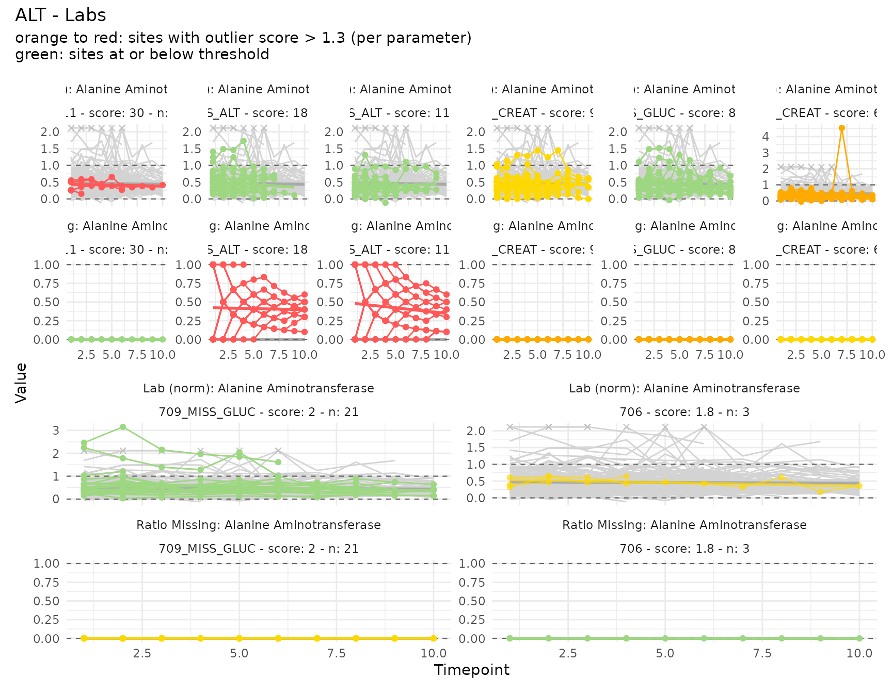
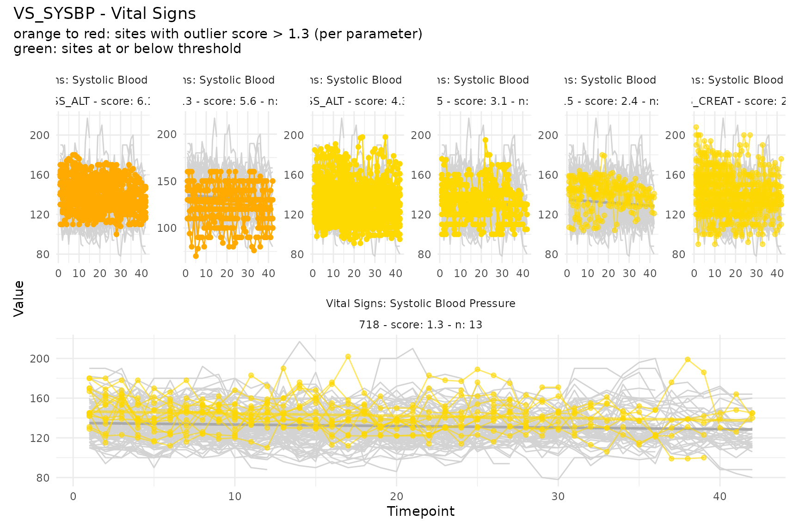
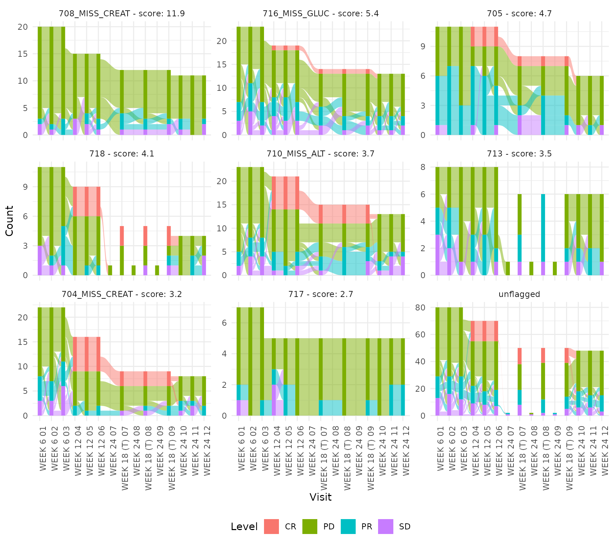
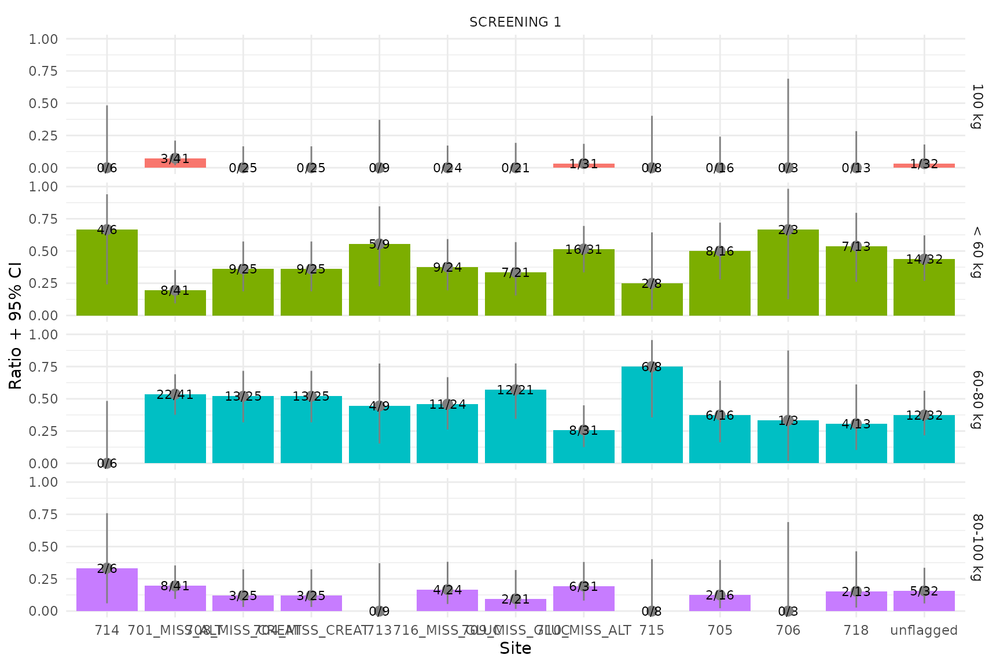

User Guide
UserGuide.RmdOverview
ctasapp is a Shiny application for exploring results
from the ctas
(Clinical Timeseries Anomaly Spotter) R package. The data pipeline
is:
Raw SDTM domains (dm, lb, vs, rs_onco)
|
v
Input_*() helpers -- transform to ctas input + keep untransformed originals
|
v
ctas::process_a_study() -- compute site-level outlier scores
|
v
ctasapp (Shiny visualization) -- interactive exploration of scores, plots, and dataEach Input_*() helper returns a list with four
elements:
| Element | Description |
|---|---|
data |
Transformed timeseries in ctas format (one row per subject/timepoint/parameter) |
subjects |
Subject metadata (subject_id,
site, country, region) |
parameters |
Parameter metadata with plot-type classification |
untransformed |
Pre-transformation values with reference ranges for display |
Input data structure
The data element has the following
columns:
| Column | Type | Description |
|---|---|---|
subject_id |
character | Subject identifier (USUBJID) |
parameter_id |
character | Unique parameter key (e.g. LB_NORM_ALT,
VS_SYSBP) |
timepoint_rank |
integer | Positional visit index (1, 2, 3, …) |
timepoint_1_name |
character | Visit label (e.g. “WEEK 2”, “SCREENING 1”) |
timepoint_2_name |
character | Secondary timepoint (usually NA) |
baseline |
logical | Baseline flag (usually NA) |
result |
numeric | Transformed value for ctas |
The parameters element defines each
parameter:
| Column | Type | Description |
|---|---|---|
parameter_id |
character | Matches data$parameter_id
|
parameter_name |
character | Human-readable label |
parameter_category_1 |
character | Broad domain (e.g. “Labs”, “Vital Signs”) |
parameter_category_2 |
character | Field-level grouping key (e.g. “ALT”, “VS_SYSBP”) |
parameter_category_3 |
character | Plot type: see table below |
The parameter_category_3 value determines how the
parameter is visualized:
parameter_category_3 |
Plot type | Produced by |
|---|---|---|
range_normalized |
Faceted line plot (values in 0–1 range) |
Input_Labs via
normalize_by_range()
|
ratio_missing |
Faceted line plot (paired with range_normalized) |
Input_Labs via
ratio_missing_over_time()
|
numeric |
Line plot (raw values) | Input_VS |
categorical |
Alluvial / stacked bar plot |
Input_RS via
encode_categorical()
|
bar |
Single-timepoint bar chart |
Input_BMI via
encode_categorical()
|
Example: Input_Labs structure
library(pharmaversesdtm)
data("dm"); data("lb")
labs <- ctasapp::Input_Labs(dm, lb)
str(labs, max.level = 1)List of 5
$ data : tibble [82,918 x 7]
$ subjects : tibble [254 x 4]
$ parameters : tibble [78 x 5]
$ untransformed : tibble [46,164 x 6]
head(labs$data[labs$data$parameter_id == "LB_NORM_ALT", ]) subject_id parameter_id timepoint_rank timepoint_1_name timepoint_2_name baseline result
AB12345-01 LB_NORM_ALT 1 SCREENING 1 NA NA 0.6363636
AB12345-01 LB_NORM_ALT 2 WEEK 2 NA NA 0.5454545
...
head(labs$parameters) parameter_id parameter_name parameter_category_1 parameter_category_2 parameter_category_3
LB_NORM_ALT ALT (norm) Labs ALT range_normalized
LB_MISS_ALT ALT (missing) Labs ALT ratio_missing
LB_NORM_ALKPH ALKPH (norm) Labs ALKPH range_normalized
LB_MISS_ALKPH ALKPH (missing) Labs ALKPH ratio_missing
...Data transformations
Range normalization
normalize_by_range() transforms lab values into a 0–1
scale using reference ranges. Values within the normal range fall
between 0 and 1; below-range values are negative, above-range are
greater than 1.
value <- c(15, 30, 45, 60)
lower <- rep(10, 4)
upper <- rep(50, 4)
normalize_by_range(value, lower, upper)
#> [1] 0.125 0.500 0.875 1.250Input_Labs() applies this to each lab parameter,
producing rows with
parameter_id = "LB_NORM_<LBTESTCD>" and
parameter_category_3 = "range_normalized".
Ratio of missing values
ratio_missing_over_time() computes a running proportion
of missing (NA) values per subject and parameter. At timepoint
,
the value is:
A subject with no missing values always has ratio 0. One with all values missing has ratio 1.
value <- c(10, NA, 30, NA, 50)
subject_id <- rep("subj_1", 5)
parameter_id <- rep("ALT", 5)
ratio_missing_over_time(value, subject_id, parameter_id)
#> [1] 0.0000000 0.5000000 0.3333333 0.5000000 0.4000000Input_Labs() produces these rows with
parameter_id = "LB_MISS_<LBTESTCD>" and
parameter_category_3 = "ratio_missing". The missingness
parameter shares the same parameter_category_2 as its
range-normalized sibling (e.g. both LB_NORM_ALT and
LB_MISS_ALT have
parameter_category_2 = "ALT"). In the app, these are
displayed as a faceted pair: the upper facet shows the normalized
values, the lower shows the missingness ratio.
Categorical encoding
encode_categorical() one-hot encodes a categorical
variable into a long format. Each observation is expanded into one row
per category level, with encoded = 1 where the observation
matches the level and encoded = 0 otherwise.
responses <- c("CR", "PR", "SD", "PD", "CR", "SD")
encoded <- encode_categorical(responses, prefix = "RS_OVRLRESP")
head(encoded, 10)
#> orig_row level encoded
#> 1 1 RS_OVRLRESP=CR 1
#> 2 2 RS_OVRLRESP=CR 0
#> 3 3 RS_OVRLRESP=CR 0
#> 4 4 RS_OVRLRESP=CR 0
#> 5 5 RS_OVRLRESP=CR 1
#> 6 6 RS_OVRLRESP=CR 0
#> 7 1 RS_OVRLRESP=PD 0
#> 8 2 RS_OVRLRESP=PD 0
#> 9 3 RS_OVRLRESP=PD 0
#> 10 4 RS_OVRLRESP=PD 1Input_RS() uses this to transform RSORRES
values. The resulting parameter_id values are
"RS_OVRLRESP=CR", "RS_OVRLRESP=PD", etc., and
parameter_category_3 = "categorical". The app renders these
as alluvial plots showing how response categories flow across
visits.
Bar (single-timepoint categorical)
Input_BMI() creates a screening-only weight category
from vital signs. Weights are binned into categories
(< 60 kg, 60-80 kg, 80-100 kg,
>= 100 kg), then one-hot encoded like
Input_RS. With only a single timepoint per subject,
parameter_category_3 = "bar" signals that the app should
render a bar chart rather than an alluvial plot.
library(pharmaversesdtm)
data("dm"); data("vs")
bmi <- ctasapp::Input_BMI(dm, vs)
head(bmi$parameters) parameter_id parameter_name parameter_category_1 parameter_category_2 parameter_category_3
VS_WEIGHT_CAT=60-80 kg 60-80 kg Vital Signs VS_WEIGHT_CAT bar
VS_WEIGHT_CAT=80-100 kg 80-100 kg Vital Signs VS_WEIGHT_CAT bar
VS_WEIGHT_CAT=>= 100 kg >= 100 kg Vital Signs VS_WEIGHT_CAT bar
VS_WEIGHT_CAT=< 60 kg < 60 kg Vital Signs VS_WEIGHT_CAT barPlain numeric
Input_VS() passes vital-sign measurements through
without transformation. The raw VSSTRESN values become
result, and parameter_category_3 = "numeric".
These are rendered as simple line plots in the app.
library(pharmaversesdtm)
data("dm"); data("vs")
vs_input <- ctasapp::Input_VS(dm, vs)
head(vs_input$data[vs_input$data$parameter_id == "VS_SYSBP", ]) subject_id parameter_id timepoint_rank timepoint_1_name result
AB12345-01 VS_SYSBP 1 SCREENING 1 132
AB12345-01 VS_SYSBP 2 BASELINE 128
AB12345-01 VS_SYSBP 3 WEEK 2 130
...Example plots
The package bundles pre-computed sample data
(sample_sdtm_data and sample_sdtm_results)
derived from pharmaversesdtm. These can be used directly to
generate all plot types.
m <- prepare_measures(sample_sdtm_data, sample_sdtm_results)Range-normalized lab values with missingness ratio
The ALT parameter has both LB_NORM_ALT
(range-normalized) and LB_MISS_ALT (missingness ratio).
They are plotted together as a faceted pair.
plot_timeseries(c("LB_NORM_ALT", "LB_MISS_ALT"), m, thresh = 1.3)
Plain numeric vital signs
Systolic blood pressure (VS_SYSBP) uses raw numeric
values without normalization.
plot_timeseries("VS_SYSBP", m, thresh = 1.3)
Categorical (alluvial)
Overall response (RS_OVRLRESP) categories are displayed
as an alluvial plot showing transitions across visits.
cat_ids <- unique(m$parameter_id[grepl("^RS_OVRLRESP=", m$parameter_id)])
plot_categorical(cat_ids, m, thresh = 1.3)
Bar (single-timepoint)
Screening weight categories are displayed as a bar chart since there is only one timepoint per subject.
bar_ids <- unique(m$parameter_id[grepl("^VS_WEIGHT_CAT=", m$parameter_id)])
plot_bar(bar_ids, m, thresh = 1.3)
#> Warning: There were 32 warnings in `dplyr::mutate()`.
#> The first warning was:
#> ℹ In argument: `ci95_low = purrr::map2_dbl(...)`.
#> Caused by warning in `stats::prop.test()`:
#> ! Chi-squared approximation may be incorrect
#> ℹ Run `dplyr::last_dplyr_warnings()` to see the 31 remaining warnings.
Uploading your own data
The app supports uploading custom data via 2 mandatory and 2 optional flat files (CSV, Parquet, or RDA):
| File | Required | Description |
|---|---|---|
| Results | Yes | Pre-joined site_scores +
timeseries from ctas::process_a_study()
|
| Input | Yes | Pre-joined data + subjects +
parameters (one row per observation) |
| Untransformed | No | Original values before transformation (for display in data tables) |
| Queries | No | Clinical query records (overlaid as dots on plots) |
See the collapsible “File format documentation” panel in the app’s
Data tab for full column specifications. An optional study
column in the Input file enables multi-study filtering in the Fields
panel.
Generating example upload files
Use generate_sample_csv() to create a set of example CSV
files from the bundled sample data. This is useful for trying the upload
feature or as a template for your own data:
generate_sample_csv("~/my_upload_files")This writes results.csv, input.csv,
untransformed.csv, and queries.csv into the
specified directory. The files combine both sample datasets
(sample_ctas_data as STUDY-001 and
sample_sdtm_data as STUDY-002) into a multi-study upload
example.